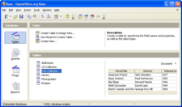

Base
Nov način dostopa do zbirk podatkov
{kind=link}
Novost v različici 2 - BASE vam omogoča neposredno in prijazno delo s podatki zbirke podatkov znotraj OpenOffice.org. Ustvarite in spreminjajte tabele, obrazce, povpraševanja in poročila, naj si bo z lastno zbirko podatkov ali z v BASE vdelanim mehanizmom zbirk podatkov HSQL. BASE ponuja na izbiro Čarovnike, Poglede oblikovanja, ali Poglede SQL za začetnike, povprečne in napredne uporabnike.
Vzdrževanje podatkov
Z BASE lahko:
- ustvarite nove tabele za podatke - in jih tudi spreminjate, ko je to potrebno;
- vzdržujete indekse tabel za hitrejši dostop do podatkov;
- ogledujete tabelo v urejevalni mreži in dodajate, spreminjate in brišete zapise;
- uporabite Čarovnika za poročila za izdelavo prepričljivih poročil iz svojih podatkov;
- uporabite Čarovnika za poročila za izdelavo 'takojšnjih' aplikacij zbirke podatkov;
Uporaba podatkov
Z BASE lahko ne le brskate po podatkih, temveč tudi:
- izvajate enostavna (eno stolpčna) ali napredna (več stolpčna) razvrščanja;
- ogledujete podmnožice svojih podatkov z enostavnimi (z enim klikom) ali naprednimi (logično povpraševanje) filtri;
- ustvarite napredna povpraševanja za prikaz podatkov na nov način, vključno s povzetki in več-tabelaričnimi pogledi;
- izdelate poročila iz široke palete možnih zapisov z uporabo Čarovnika za poročila;
Tehnične opombe
BASE vključuje polno različico pogona zbirk podatkov HSQL, ki shranjuje podatke v datotekah XML. Dostopa lahko tudi do datotek dBASE za enostavno delo z zbirkami podatkov.
Za bolj napredne zahteve ima BASE vgrajeno podporo za številne priljubljene zbirke podatkov (Adabas D, ADO, Microsoft Access, MySQL) ali vsako zbirko podatkov prek standardiziranih gonilnikov ODBC in JDBC. Podpira tudi vsak z LDAP skladen adresar, kot tudi najbolj razširjene zapise, kot so Microsoft Outlook, Microsoft Windows in Mozilla.
Za več podatkov si, prosimo, oglejte Projektno stran Base.